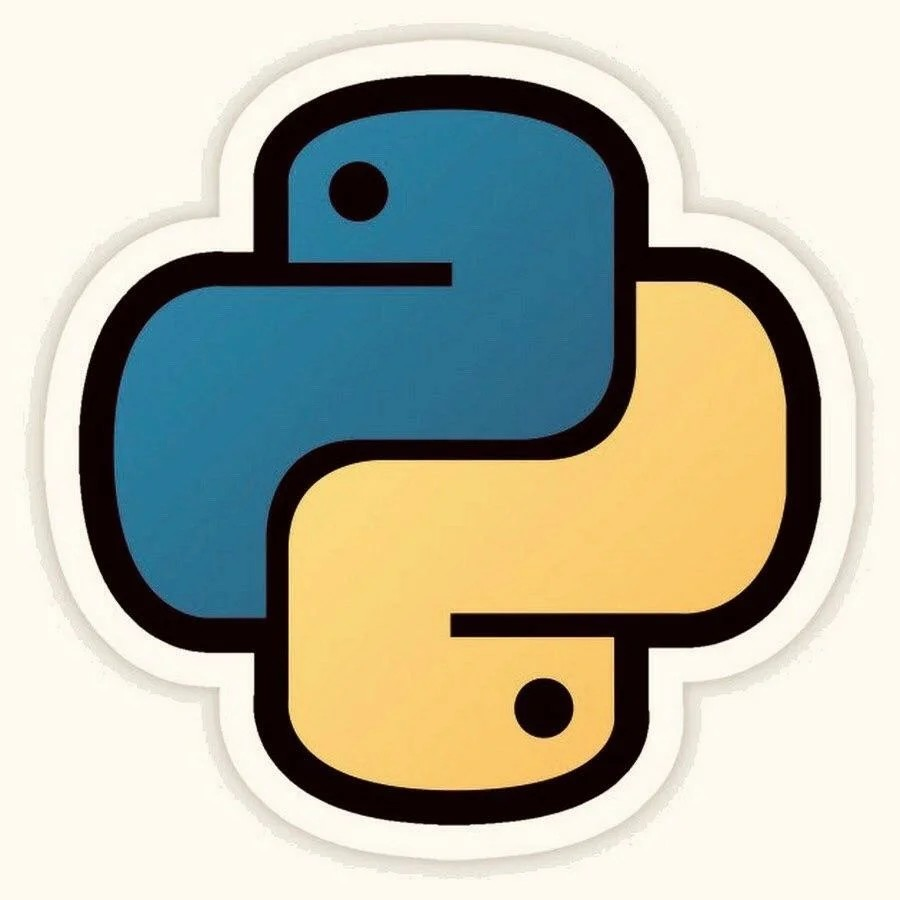
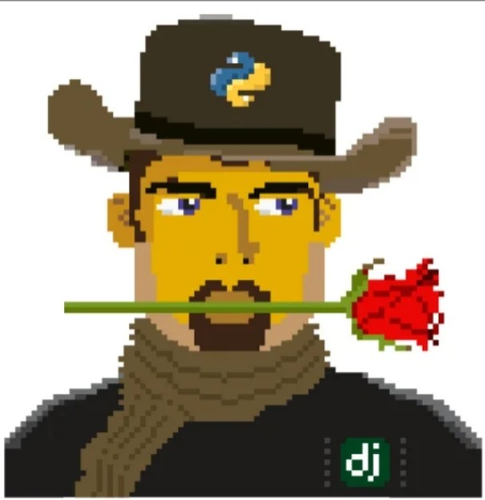
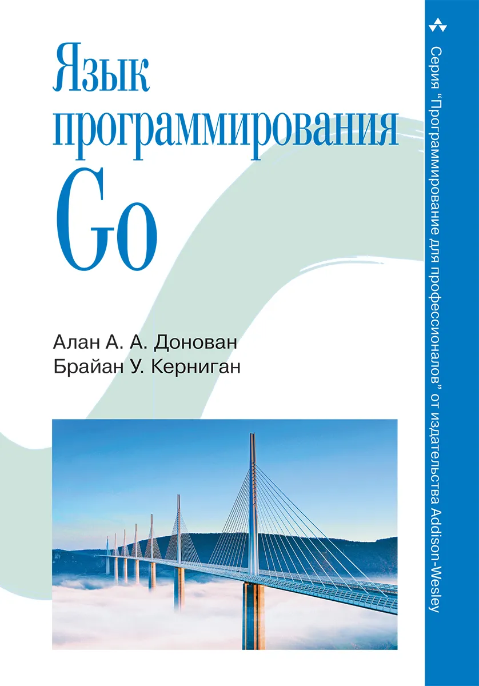
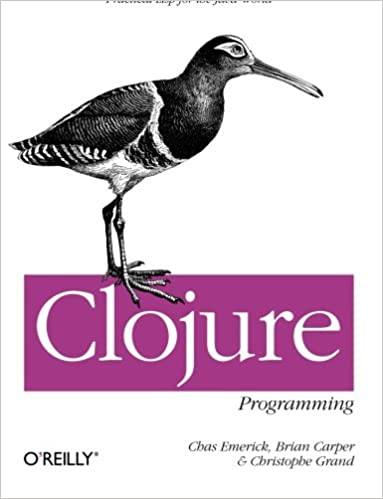
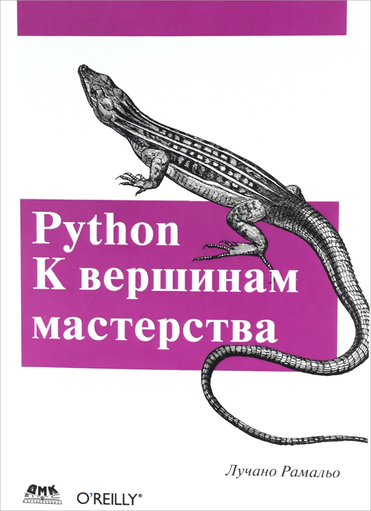

Книжная полка
Очень короткие заметки по прочитанным (полностью или частично) книгам.
Укус питона (A Byte of Python)

Tango with Django

Язык программирования Go (The Go Programming Language)

Программирование на Clojure (Clojure Programming)

Python к вершинам мастерства (Fluent Python)
